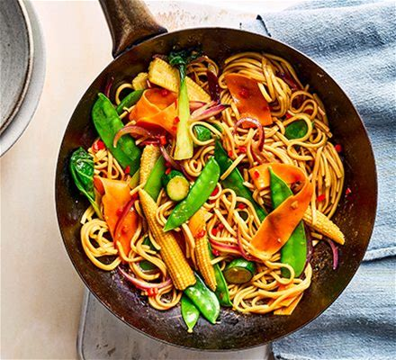

Vegetable Stir-fry

Ingredients:
- 2 tbsp vegetable oil
- 1 bell pepper, sliced
- 1 cup broccoli florets
- 1 carrot, julienned
- 1 zucchini, sliced
- 2 tbsp soy sauce
- 1 tbsp oyster sauce
- 1 tsp sesame oil
- 2 garlic cloves, minced
- Salt and pepper to taste
Instructions:
- Heat vegetable oil in a large skillet or wok over medium-high heat.
- Add garlic and sauté until fragrant.
- Add broccoli, carrots, and bell pepper. Stir-fry for 2-3 minutes.
- Add zucchini and continue cooking for another 2 minutes.
- Mix soy sauce, oyster sauce, and sesame oil in a small bowl.
- Pour the sauce over the vegetables and stir well to coat evenly.
- Cook for an additional 2 minutes until vegetables are tender but crisp.
- Season with salt and pepper to taste.
- Serve hot as a side dish or over steamed rice.